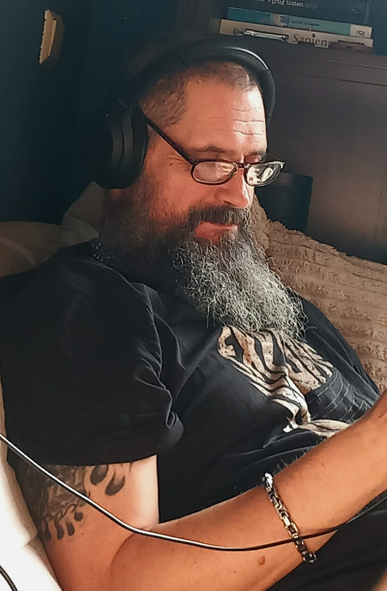
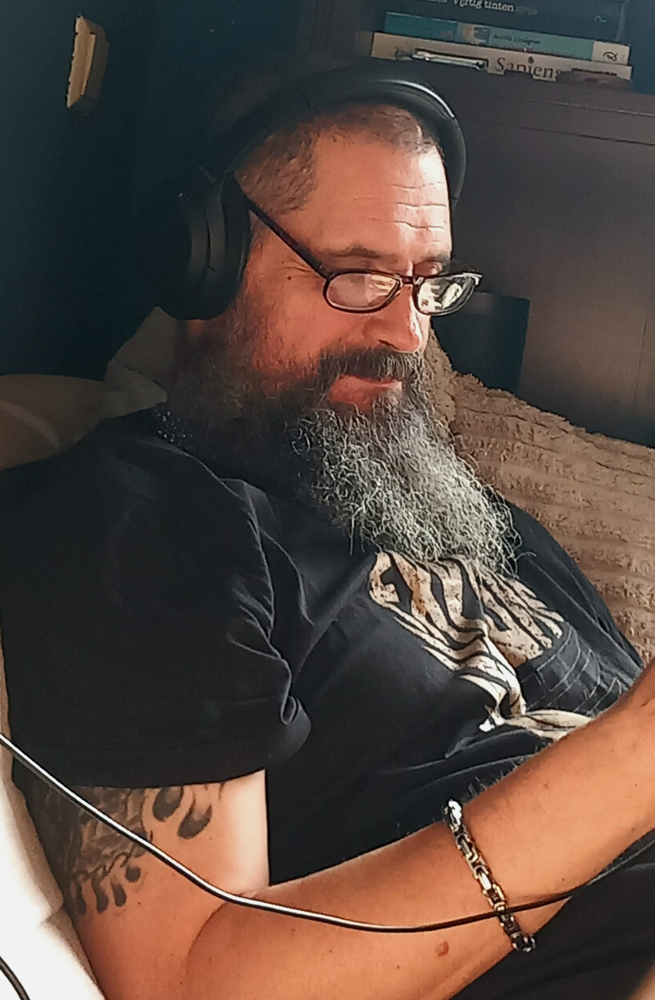
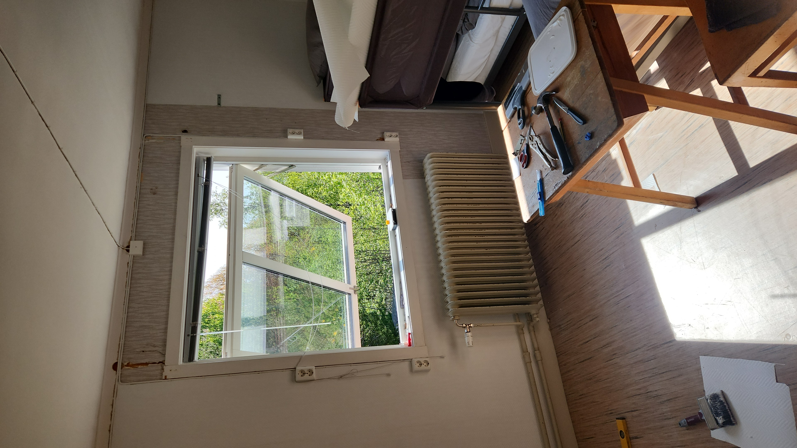
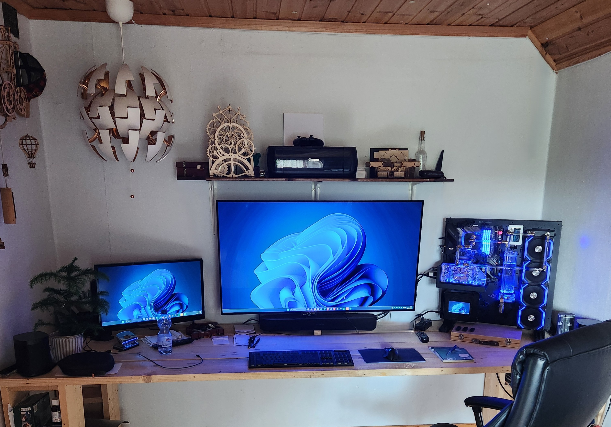
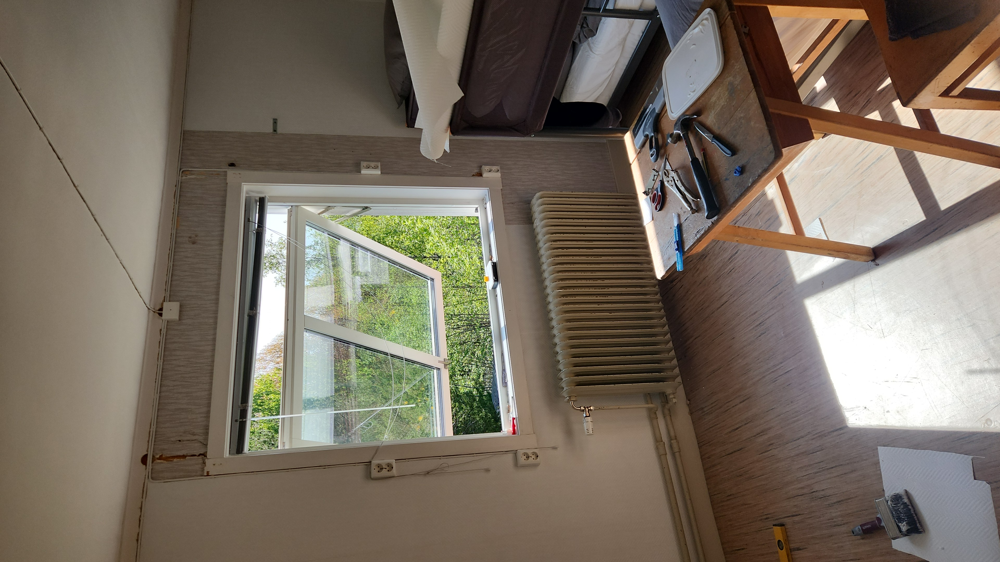
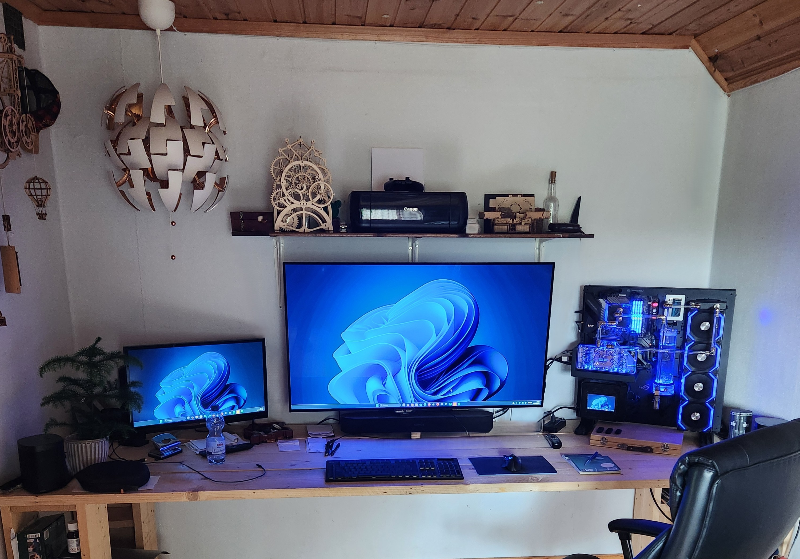

Nico on Point Services
Versatile help with facility work, renovations, installations & PCs
Versatile help with facility work, renovations, installations & PCs
Based in beautiful Värmland, but I travel all over Sweden to help people with whatever needs fixing, installing, or building. From small home upgrades and troubleshooting to fully customized liquid-cooled gaming PCs – I’ve got you covered. No-nonsense service, fair prices, and always on point. Let’s get your project rolling!


 




Years of hands-on experience. From high-end PCs to home repairs – I tackle every job with care and skill. No fuss, just quality.
I’m a skilled and experienced handyman with a long and varied career. Whether it’s a leaking tap or a high-end gaming PC, I’ve got you covered.
I’m a jack of all trades and I can assist you with problem solving and hands-on work around the house or your business.
Reasonable rates starting at 450 SEK/hour.
If you want to know more about me, click on one of the links below to my socials? Or just fill out the contact form, and we'll talk to each other soon.
Looking forward to your message or request!